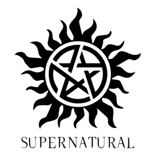

meu primeiro post
por: Felipe
seja bem vindo no meu primeiro blog, esse blog vamos falar da serie supernatural
por: Felipe
seja bem vindo no meu primeiro blog, esse blog vamos falar da serie supernatural

por: Felipe
Supernatural (ou Sobrenatural) acompanha a jornada dos irmãos Sam e Dean Winchester enquanto viajam pelos Estados Unidos em um Chevrolet Impala 1967 caçando monstros, demônios, fantasmas e outras criaturas malignas